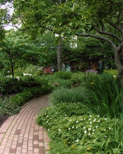

A Tour of the Garden
The primary planting areas are at the perimeter, including a long herbaceous border of annuals, perennials, and seasonal flowering plants. New bulbs are featured every year, and there is always something in bloom. In a bed of native plants indigenous ferns enjoy a cool place in the shade, while an elevated woodland garden thrives in deeper shade.
The rose garden is a June highlight. Evergreens, flowering shrubs, rhododendrons, and a changing display of annuals grace the back bed. The pond is a habitat for koi and shubunkin goldfish as well as water lilies and papyrus. The garden's trees include star and saucer magnolias, a white fringetree, crabapples, and two rare American yellowwoods.

From Market to Garden
The Jefferson Market was leveled in 1873 to make way for the Courthouse designed by Calvert Vaux, one of Central Park’s master planners, and Frederick Clarke Withers. In 1895, a panel of architects voted it the fifth most beautiful building in America.
In 1931, the Women’s House of Detention was built; its eleven stories towered over the courthouse, casting the sidewalks in shadow. Neighbors recall around-the-clock noise as inmates shouted from their windows to friends and visitors on the streets below.
In the 1960s, Greenwich Village residents organized to save the courthouse from demolition. They persuaded the City to renovate it for use as a public library and successfully demanded that the prison be demolished. Energized by this accomplishment, the community created the garden as a public green space in place of the women’s prison.
In 1974 the land was transferred to the New York City Department of Parks & Recreation. A newly formed committee of local residents became its stewards. In the spring of 1975, Jefferson Market Garden's first flowers bloomed.
Our garden is the creation of all the people who care for and enjoy it. We hope you’ll join us.
|